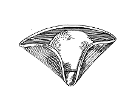
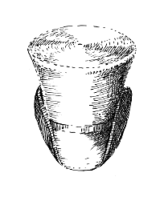
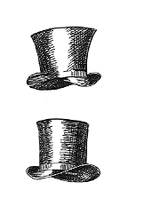
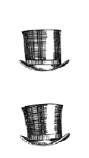
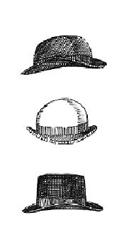
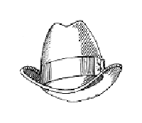
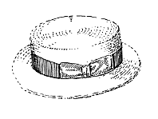
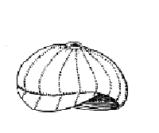
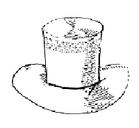

|
A NOTE ON OUR HAT MAKING METHODS
With the exception of the noted ocassional use of machine sewing, most of our hatmaking techniques pre-date the English industrial revolution. The trade has separated into the two fields of feltmaking and hatmaking, but the methods used here pre-date the factory hatmaking system and early machine-made hats. W e do not make our own felt, but all other aspects of the work use methods which date from the time during which the feltmaker was also the hat blocker and hat finisher.
NOTE ABOUT BLOCKING
All felt hats are stretched over wooden shapes called hat blocks which give the hats their individual shapes. Prior to 1817 all hat blocks were lathe turned and, therefore, round. When a wig is worn, the resultant shape of the head is more or less round. If a round blocked hat needs to fit an oval head, the head opening of the hat is stretched to form the required oval shape. This also gives the characteristic curve to the brim of round blocked top hats. After 1817, oval hat blocks more closely approximating the natural shape of the head were introduced and an overlap occurred during which round and oval blocking were used. Certain hat styles can be found late in the 19th century which existed in the early 19th century. Certain hats were made on round blocks as late as the 1850's and many hats (Beaver top hats especially) were often passed down several generations. |
|
"Wideawake" Hat (Quaker Hat)
1720 - 1817 |
Early Top Hat
1785 - 1800 |
|
|
Hand blocked, handsewn, round blocked furfelt with cotton drawstring seatband. 4" deep crown, plain unbound 4" wide brim. Available in black or brown (other colours available upon request)
HT001..............$235.00 |
Hand blocked, hand sewn, round blocked.
Beaver finish fur felt, leather sweatband, cotton lining. Tapering crwon 7 1/2" deep, 2 to 3" wide brim(unbound brim edge).
In black or grey ( other colours upon request)
HT005...........$525.00 |
|
|
Civilian Silk Tricorne (Speaker's Tricorne)
1740 - 1760's |
Civilian "Triangular" Tricorne
1740 - 1760's |
|

|
Hand blocked, hand sewn, round blocked. Felt foundation covered with ribbed bombazine, cotton drawstring seatband. 4" deep crwon, 5" wide brim at the corners and 7" wide at the sides.
Black (other colours upon request)
HT003.............$460.00 |
Handblocked, handsewn, round blocked furfelt with cotton drawstring sweatband.
4" deep crown, 4 1/2" wide brim.
Black or brown with matching brim edge binding
(other colours upon request)
HT002a Wool Felt, French Hooks......$235.00
HT002 Fur Felt, English Lacing......$265.00
HT002b Fur Felt, French Hooks......$285.00 |
|
|
Top Hat 1800 - 1820
(worn up to 1870's) |
"John Bull" Top Hat 1800 - 1820
(worn up to 1860's) |
"Wellington" Top Hat 1800 - 20
(worn up to 1860's) |
|
|
 |
Hand blocked, hand sewn, round blocked.
Beaver finishfur felt, leather sweatband, cotton lining.
Flared, straight or tapered crown 7" deep. 2 1/2" wide brim.
In black or grey ( other colours upon request)
HT006a Unbound brim edge - $510.00
HT006b Ribbon bound brim edge - $525.00 |
Hand blocked, hand sewn, round blocked.
Beaver finish fur felt, leather sweatband, cotton lining.4" deep flared crown, 4" wide brim. In black or grey. (other colours upon request)
HT008a Unbound brim edge - $510.00
HT008b Ribbon bound edge - $525.00 |
Hand blocked, hand sewn, round blocked.
Beaver finish fur felt, leather sweatband, cotton lining. Flared 7" deep crown, 2 1/2" wide brim.
In black or grey. ( other colours upon request)
HT007a Unbound brim edge - $510.00
HT007b Bound brim edge - $525.00 |
|
|
|
|
|
Top Hat 1880 - 1900
(worn into the 1920's) |
|
 |
 |
Hand blocked, hand sewn, oval blocked.
Beaver finish fur felt, leather sweatband, cotton lining, Flared or straight 7" deep crown with 2 1/2" wide brim. Brim bound in ribbon.
In black or grey. (other colours upon request)
HT016.............$525.00 |
Hand blocked, hand sewn, oval blocked.
Beaver finish fur felt, flared or straight 7" deep crown. 2" wide brim with edge bound in ribbon.
In black or grey. (other colours upon request)
HT017.............$525.00 |
Hand blocked, hand sewn, oval blocked. Beaver finish fur felt, leather sweatband, cotton lining, ribbon trim. Straight or flared crown , 5 3/4" deep. 2" wide brim.
In black or grey. (other colours upon request)
HT024.............$525.00 |
|
|
Bowler Hat 1850 - 1900
(still being worn today) |
Homburg Hat 1860 - 1900
(still seen in the 1960's) |
Deerstalker Cap 1860 - 1900
(worn into the 1930's) |
 |
 |
|
Hand blocked, hand sewn, oval blocked.
fur felt, leather sweatband, ribbon trim.
Dome crown 1850 - 1900 (1990's)
Conical crown 1860 - 1900
Square crown 1865 - 1910 (1945 Winston Churchill)
In black, brown or grey. (other colours upon request)
HT018...........$310.00
HT018a wool felt.....$265.00 |
Hand blocked, hand sewn, oval blocked.
Fur felt, leather sweatband, ribbon trim
with 2 to 2 1/2" wide brim.
In black or grey (other colours upon request)
HT019.............$310.00
HT019a wool felt.....$265.00 |
Hand cut hand assembled, machine sewn.
Wool with cotton lining
HT020...........$165.00 |
|
|
|
Straw Boater Hat 1860 - 1900
(worn into 1930's) |
|
 |
 |
Hand blocked, hand finished, machine sewn. Milan braid straw.
Leather sweatband, ribbon hatband.
3 1/2" deep crown, 2 1/2" wide brim.
HT022...............$265.00 |
Hand cut, hand assembled, machine sewn and hand finished. 6 section crown with visor.
In tweeds and wools to match the suit.
HT023.............$135.00 |
|
|
Due to the difficulties in obtaining a regular supply of Panama straw, the following hats are not always available.
Please call before making your order. |
Panama Planter's Hat
1820 - 1900
(Plantation Overseer's Hat) |
Straw Top Hat
1800 - 1870's |
"John Bull" Straw Top Hat
1800 - 1870's |
|
 |
|
Hand blocked, hand sewn, round blocked.
Ventilayted Panama straw, pork pie
telescoped crown, 4 1/2" wide brim and cotton drawstring sweatband.
Natural Panama colour only.
HT015..............N/A
HT015a Moroca straw.......$135.00
Depends on availability of straw |
Hand blocked, hand sewn, round blocked.
Ventilated Panama straw, cotton drawstring sweatband. Flared 7" deep crown, 4 1/2" wide brim.
Natural Panama colour.
HT010...........N/A
HT10a Moroca straw.....$225.00
Depends on availability of straw |
Hand blocked, hand sewn, round blocked. Ventilated Panama straw, cotton drawstring sweatband.
Flared 4" deep crown, 4 1/2" wide brim.
Natural Panama colour
HT009..........N/A
HT009a Moroca straw.....$135.00
Depends on availability of straw |
|
|